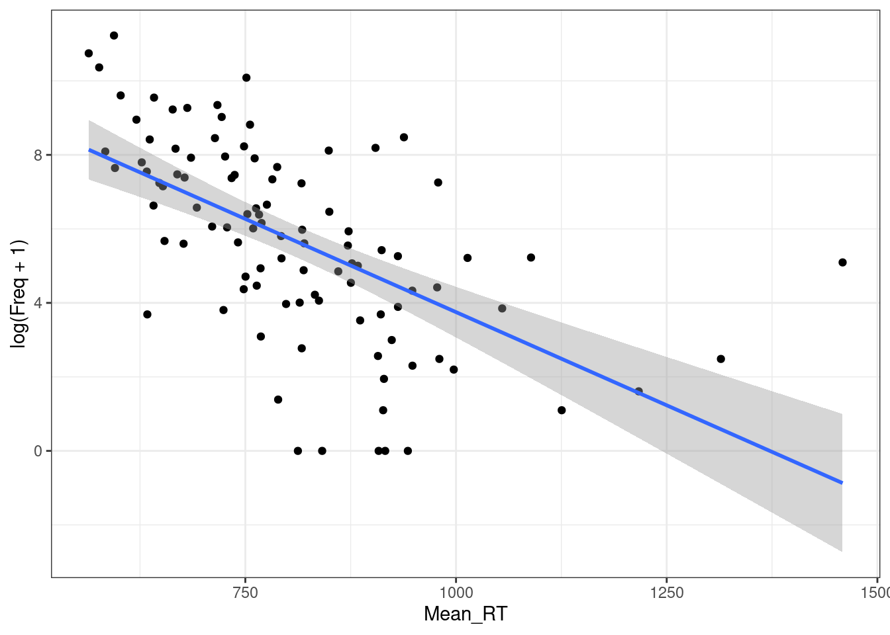
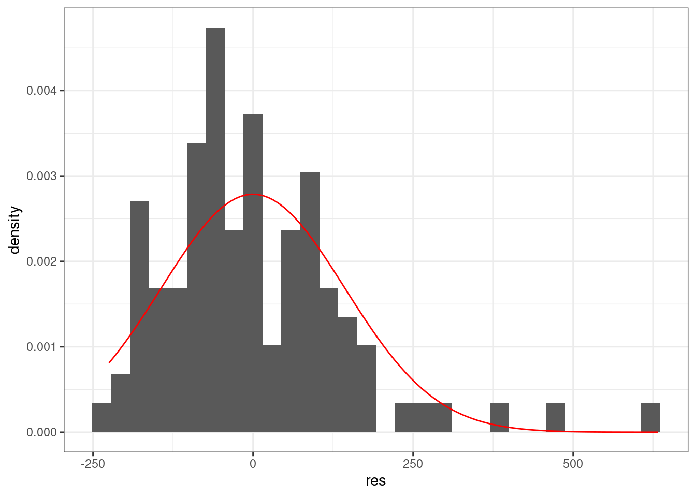
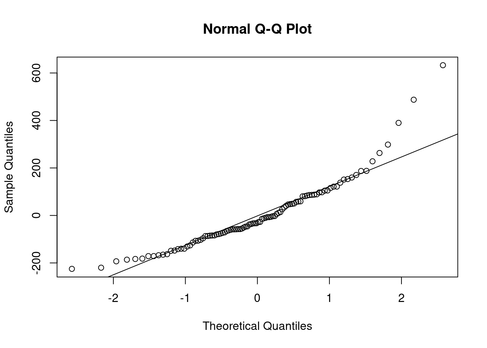
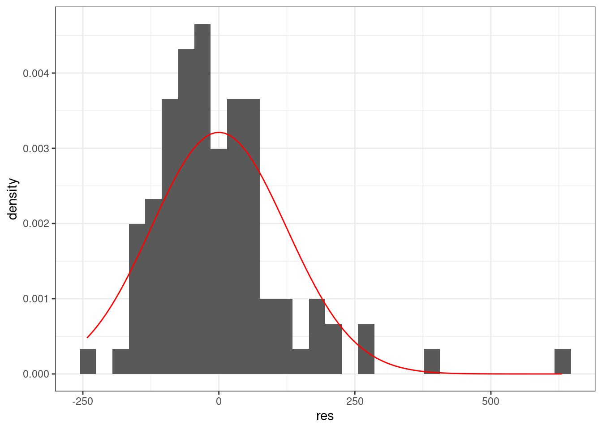
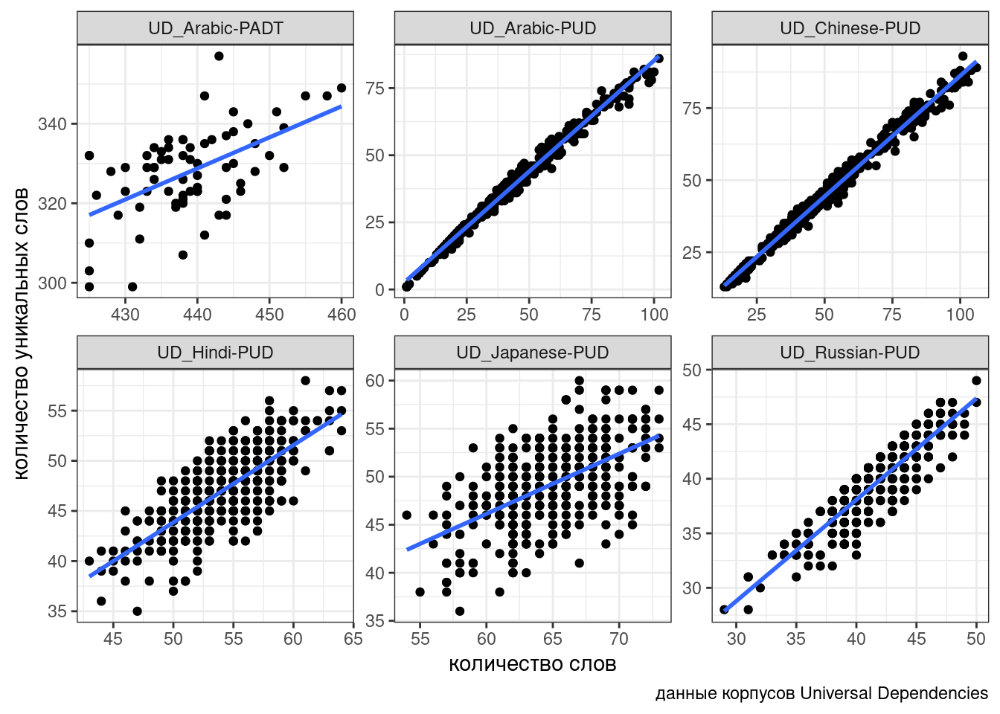
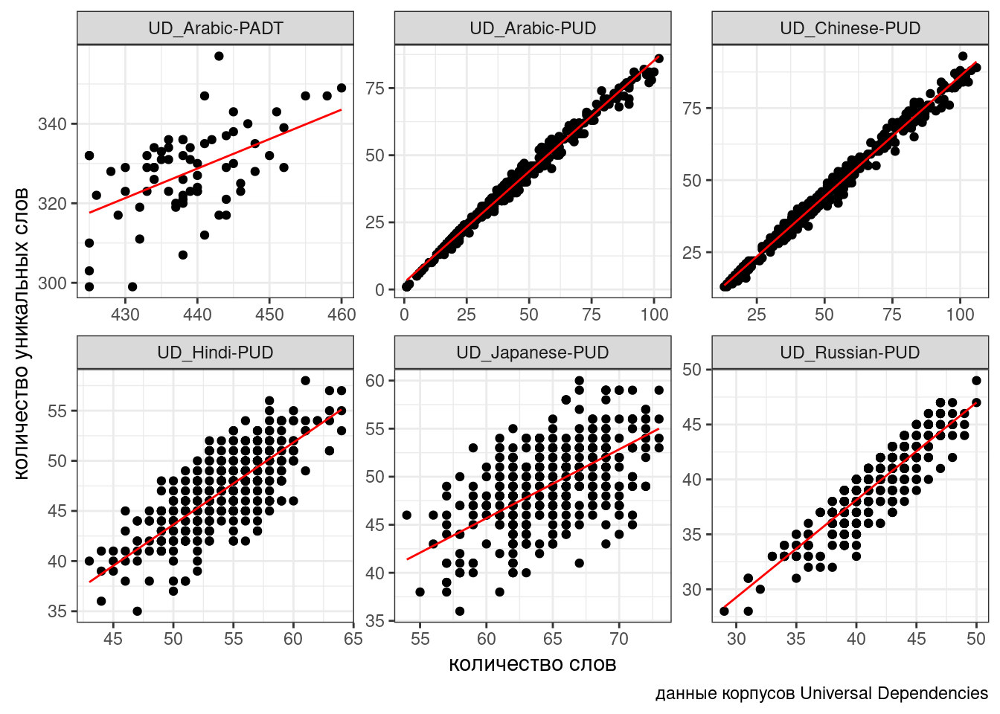
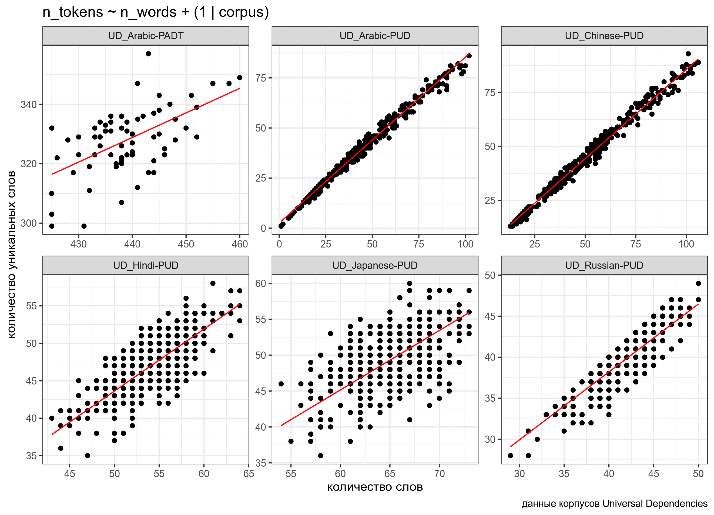

9 Ограничения на применение регрессии
Некоторые думают, что линейная регрессия решит все их проблемы (по крайней мере те из них, которые связаны с предсказанием какой-то числовой переменной). Это так. Но нужно быть осторожным — у регрессии есть свои ограничения на применение.
9.1 Введение
Ссылка на RMD с обсуждением.
9.1.1 Библиотеки
library(tidyverse)9.1.2 Lexical Decision Task data
Dataset and description from Rling package by Natalia Levshina. This data set contains 100 randomly selected words from the English Lexicon Project data (Balota et al. 2007), their lengths, mean reaction times and corpus frequencies.
ldt <- read_csv("https://goo.gl/ToxfU6")
ldt9.2 Нелинейность взаимосвязи
Давайте посмотрим на простой график:
ldt %>%
ggplot(aes(Mean_RT, Freq))+
geom_point()+
theme_bw()
Регрессия на таких данных будет супер неиформативна:
ldt %>%
ggplot(aes(Mean_RT, Freq))+
geom_point()+
geom_smooth(method = "lm")+
theme_bw()m1 <- summary(lm(Mean_RT~Freq, data = ldt))
m1
Call:
lm(formula = Mean_RT ~ Freq, data = ldt)
Residuals:
Min 1Q Median 3Q Max
-224.93 -85.42 -30.52 81.90 632.66
Coefficients:
Estimate Std. Error t value Pr(>|t|)
(Intercept) 826.998242 15.229783 54.301 < 0.0000000000000002 ***
Freq -0.005595 0.001486 -3.765 0.000284 ***
---
Signif. codes: 0 '***' 0.001 '**' 0.01 '*' 0.05 '.' 0.1 ' ' 1
Residual standard error: 143.9 on 98 degrees of freedom
Multiple R-squared: 0.1264, Adjusted R-squared: 0.1174
F-statistic: 14.17 on 1 and 98 DF, p-value: 0.00028439.2.1 Логарифмирование
ldt %>%
ggplot(aes(Mean_RT, log(Freq)))+
geom_point()+
geom_smooth(method = "lm")+
theme_bw()
ldt %>%
ggplot(aes(Mean_RT, log(Freq+1)))+
geom_point()+
geom_smooth(method = "lm")+
theme_bw()
m2 <- summary(lm(Mean_RT~log(Freq+1), data = ldt))
m2
Call:
lm(formula = Mean_RT ~ log(Freq + 1), data = ldt)
Residuals:
Min 1Q Median 3Q Max
-242.36 -76.66 -17.49 48.64 630.49
Coefficients:
Estimate Std. Error t value Pr(>|t|)
(Intercept) 1001.60 29.79 33.627 < 0.0000000000000002 ***
log(Freq + 1) -34.03 4.76 -7.149 0.000000000158 ***
---
Signif. codes: 0 '***' 0.001 '**' 0.01 '*' 0.05 '.' 0.1 ' ' 1
Residual standard error: 124.8 on 98 degrees of freedom
Multiple R-squared: 0.3428, Adjusted R-squared: 0.3361
F-statistic: 51.11 on 1 and 98 DF, p-value: 0.0000000001576m1$adj.r.squared[1] 0.1174405m2$adj.r.squared[1] 0.336078Отлогорифмировать можно и другую переменную.
ldt %>%
ggplot(aes(log(Mean_RT), log(Freq + 1)))+
geom_point()+
geom_smooth(method = "lm")+
theme_bw()
m3 <- summary(lm(log(Mean_RT)~log(Freq+1), data = ldt))
m1$adj.r.squared[1] 0.1174405m2$adj.r.squared[1] 0.336078m3$adj.r.squared[1] 0.3838649Как интерпретировать полученную регрессию с двумя отлогорифмированными значениями?
В обычной линейной регресии мы узнаем отношения между \(x\) и \(y\): \[y_i = \beta_0+\beta_1\times x_i\]
Как изменится \(y_j\), если мы увеличем \(x_i + 1 = x_j\)? \[y_j = \beta_0+\beta_1\times x_j\]
\[y_j - y_i = \beta_0+\beta_1\times x_j - (\beta_0+\beta_1\times x_i) = \beta_1(x_j - x_i)\]
Т. е. \(y\) увеличится на \(\beta_1\) , если \(x\) увеличится на 1. Что же будет с логарифмированными переменными? Как изменится \(y_j\), если мы увеличем \(x_i + 1 = x_j\)?
\[\log(y_j) - \log(y_i) = \beta_1\times (\log(x_j) - \log(x_i))\]
\[\log\left(\frac{y_j}{y_i}\right) = \beta_1\times \log\left(\frac{x_j}{x_i}\right) = \log\left(\left(\frac{x_j}{x_i}\right) ^ {\beta_1}\right)\]
\[\frac{y_j}{y_i}= \left(\frac{x_j}{x_i}\right) ^ {\beta_1}\]
Т. е. \(y\) увеличится на \(\beta_1\) процентов, если \(x\) увеличится на 1 процент.
Логарифмирование — не единственный вид траснформации:
- трансформация Тьюки
shiny::runGitHub("agricolamz/tukey_transform")
- трансформация Бокса — Кокса
- …
В датасет собрана частотность разных лемм на основании корпуса НКРЯ (Ляшевская and Шаров 2009) (в датасете только значения больше ipm > 10). Известно, что частотность слова связана с рангом слова (см. закон Ципфа). Постройте переменную ранга и визуализируйте связь ранга и логорифма частотности с разбивкой по частям речи. Какие части речи так и не приобрели после трансформации “приемлимую” линейную форму? (я насчитал 5 таких)
9.3 Нормальность распределение остатков
Линейная регрессия предполагает нормальность распределения остатков. Когда связь не линейна, то остатки тоже будут распределены не нормально.
Можно смотреть на певрый график используя функцию plot(m1) — график остатков. Интерпретаций этого графика достаточно много (см. статью про это).
Можно смотреть на qqplot:
tibble(res = m1$residuals) %>%
ggplot(aes(res))+
geom_histogram(aes(y = ..density..))+
stat_function(fun = dnorm, args = list(mean = 0, sd = sd(m1$residuals)), color = "red")
qqnorm(m1$residuals)
qqline(m1$residuals)
tibble(res = m2$residuals) %>%
ggplot(aes(res))+
geom_histogram(aes(y = ..density..))+
stat_function(fun = dnorm, args = list(mean = 0, sd = sd(m2$residuals)), color = "red")
qqnorm(m2$residuals)
qqline(m2$residuals)
tibble(res = m3$residuals) %>%
ggplot(aes(res))+
geom_histogram(aes(y = ..density..))+
stat_function(fun = dnorm, args = list(mean = 0, sd = sd(m3$residuals)), color = "red")
qqnorm(m3$residuals)
qqline(m3$residuals)9.4 Гетероскидастичность
Распределение остатков непостоянно (т. е. не гомоскидастичны):
ldt %>%
ggplot(aes(Mean_RT, Freq))+
geom_point()+
theme_bw()
Тоже решается преобазованием данных.
9.5 Мультиколлинеарность
Линейная связь между некоторыми предикторами в модели.
- корреляционная матрица
- VIF (Variance inflation factor),
car::vif()- VIF = 1 (Not correlated)
- 1 < VIF < 5 (Moderately correlated)
- VIF >=5 (Highly correlated)
9.6 Независимость наблюдений
Наблюдения должны быть независимы. В ином случае нужно использовать модель со смешанными эффектами.
9.6.1 Линейная модель со смешанными эффектами
В качестве примера мы попробуем поиграть с законом Хердана-Хипса, описывающий взаимосвязь количества уникальных слов в тексте в зависимости от длины текста. В датасете собрано шесть корпусов Universal Dependencies (Zeman et al. 2020) и некоторые числа, посчитанные на их основании:
ud <- read_csv("https://raw.githubusercontent.com/agricolamz/2021_da4l/master/data/ud_corpora.csv")
ud %>%
ggplot(aes(n_words, n_tokens))+
geom_point()+
facet_wrap(~corpus, scale = "free")+
geom_smooth(method = "lm", se = FALSE)+
labs(x = "количество слов",
y = "количество уникальных слов",
caption = "данные корпусов Universal Dependencies")
Связь между переменными безусловно линейная, однако в разных корпусах представлена разная перспектива: для каких-то корпусов, видимо, тексты специально нарезались, так что тексты таких корпусов содержат от 30-40 до 50-80 слов, а какие-то оставались не тронутыми. Чтобы показать, что связь есть, нельзя просто “слить” все наблюдения в один котел (см. парадокс Симпсона), так как это нарушит предположение регрессии о независимости наблюдений. Мы не можем включить переменную corpus в качестве dummy-переменной: тогда один из корпусов попадет в интерсепт (станет своего рода базовым уровенем), а остальные будут от него отсчитываться. К тому же не очень понятно, как работать с новыми данными из других корпусов: ведь мы хотим предсказывать значения обобщенно, вне зависимости от корпуса.
При моделировании при помощи моделей со случайными эффектами различают:
- основные эффекты – это те связи, которые нас интересуют, независимые переменные (количество слов, количество уникальных слов);
- случайные эффекты – это те переменные, которые создают группировку в данных (корпус).
В результате моделирования появляется обобщенная модель, которая игнорирует группировку, а потом для каждого значения случайного эффекта генерируется своя регрессия, отсчитывая от обобщенной модели как от базового уровня.
Рассмотрим простейший случай:
library(lme4)
library(lmerTest)
fit1 <- lmer(n_tokens~n_words+(1|corpus), data = ud)
summary(fit1)Linear mixed model fit by REML. t-tests use Satterthwaite's method [
lmerModLmerTest]
Formula: n_tokens ~ n_words + (1 | corpus)
Data: ud
REML criterion at convergence: 10321.5
Scaled residuals:
Min 1Q Median 3Q Max
-7.5271 -0.4947 0.0354 0.5282 8.6350
Random effects:
Groups Name Variance Std.Dev.
corpus (Intercept) 240.608 15.512
Residual 8.844 2.974
Number of obs: 2046, groups: corpus, 6
Fixed effects:
Estimate Std. Error df t value Pr(>|t|)
(Intercept) -4.527634 6.353147 4.958748 -0.713 0.508
n_words 0.827933 0.004418 1992.686553 187.415 <0.0000000000000002 ***
---
Signif. codes: 0 '***' 0.001 '**' 0.01 '*' 0.05 '.' 0.1 ' ' 1
Correlation of Fixed Effects:
(Intr)
n_words -0.079ud %>%
mutate(predicted = predict(fit1)) %>%
ggplot(aes(n_words, n_tokens))+
geom_point()+
facet_wrap(~corpus, scale = "free")+
geom_line(aes(y = predicted), color = "red") +
labs(x = "количество слов",
y = "количество уникальных слов",
caption = "данные корпусов Universal Dependencies")
В данном случае мы предполагаем, что случайный эффект имеет случайный свободный член. Т. е. все получающиеся линии параллельны, так как имеют общий угловой коэффициент. Можно допустить большую свободу и сделать так, чтобы в случайном эффекте были не только интерсепт, но и свободный член:
fit2 <- lmer(n_tokens~n_words+(1+n_words|corpus), data = ud)
summary(fit1)Linear mixed model fit by REML. t-tests use Satterthwaite's method [
lmerModLmerTest]
Formula: n_tokens ~ n_words + (1 | corpus)
Data: ud
REML criterion at convergence: 10321.5
Scaled residuals:
Min 1Q Median 3Q Max
-7.5271 -0.4947 0.0354 0.5282 8.6350
Random effects:
Groups Name Variance Std.Dev.
corpus (Intercept) 240.608 15.512
Residual 8.844 2.974
Number of obs: 2046, groups: corpus, 6
Fixed effects:
Estimate Std. Error df t value Pr(>|t|)
(Intercept) -4.527634 6.353147 4.958748 -0.713 0.508
n_words 0.827933 0.004418 1992.686553 187.415 <0.0000000000000002 ***
---
Signif. codes: 0 '***' 0.001 '**' 0.01 '*' 0.05 '.' 0.1 ' ' 1
Correlation of Fixed Effects:
(Intr)
n_words -0.079ud %>%
mutate(predicted = predict(fit2)) %>%
ggplot(aes(n_words, n_tokens))+
geom_point()+
facet_wrap(~corpus, scale = "free")+
geom_line(aes(y = predicted), color = "red") +
labs(x = "количество слов",
y = "количество уникальных слов",
caption = "данные корпусов Universal Dependencies")
При желании мы можем также построить модель, в которой в случайном эффекте будет лишь угловой коэффициент, а свободный член будет фиксированным:
fit3 <- lmer(n_tokens~n_words+(0+n_words|corpus), data = ud)
summary(fit1)Linear mixed model fit by REML. t-tests use Satterthwaite's method [
lmerModLmerTest]
Formula: n_tokens ~ n_words + (1 | corpus)
Data: ud
REML criterion at convergence: 10321.5
Scaled residuals:
Min 1Q Median 3Q Max
-7.5271 -0.4947 0.0354 0.5282 8.6350
Random effects:
Groups Name Variance Std.Dev.
corpus (Intercept) 240.608 15.512
Residual 8.844 2.974
Number of obs: 2046, groups: corpus, 6
Fixed effects:
Estimate Std. Error df t value Pr(>|t|)
(Intercept) -4.527634 6.353147 4.958748 -0.713 0.508
n_words 0.827933 0.004418 1992.686553 187.415 <0.0000000000000002 ***
---
Signif. codes: 0 '***' 0.001 '**' 0.01 '*' 0.05 '.' 0.1 ' ' 1
Correlation of Fixed Effects:
(Intr)
n_words -0.079ud %>%
mutate(predicted = predict(fit3)) %>%
ggplot(aes(n_words, n_tokens))+
geom_point()+
facet_wrap(~corpus, scale = "free")+
geom_line(aes(y = predicted), color = "red") +
labs(x = "количество слов",
y = "количество уникальных слов",
caption = "данные корпусов Universal Dependencies")
Линии получились очень похожими, но разными:

Сравним полученные модели:
anova(fit3, fit2, fit1)
Визуализируйте полученные модели при помощи функции plot(). Какие ограничения на применение линейной регрессии нарушается в наших моделях?
Постройте модель со случайными угловым коэффициентом и свободным членом, устранив проблему, которую вы заметили в прошлом задании.
Пользуясь знаниями из предыдущих заданий, смоделируйте связь количества слов и количества существительных. С какими проблемами вы столкнулись.